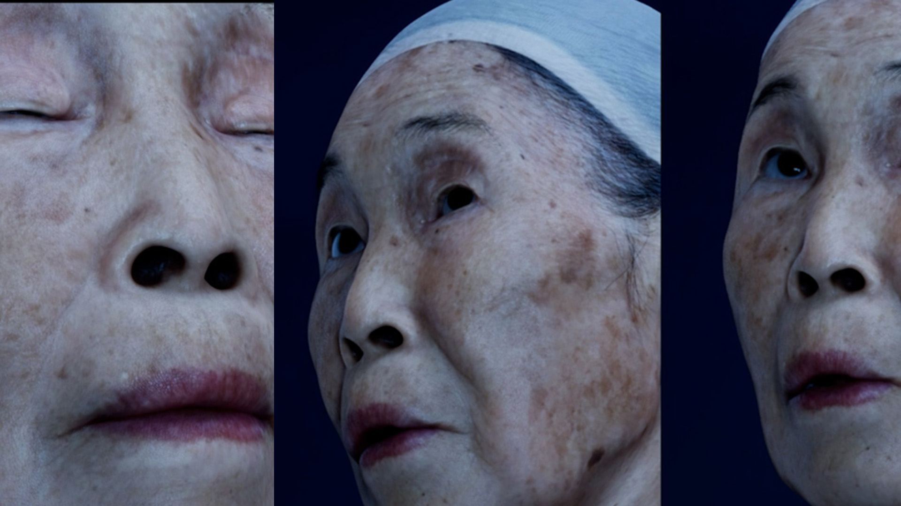

AI ZOO
Hand sensing and AI dialogue drive a character and physical apparatus.
Unity / Python · Leap Motion · Arduino servos
Director / technical artist
Hand sensing and AI dialogue drive a character and physical apparatus.
Unity / Python · Leap Motion · Arduino servos
Director / technical artist

Azure Kinect input meets Timeline sequencing and live archival imagery.
Azure Kinect · Unity Timeline · Live composition
Coding director / Unity developer

A visitor’s tracked movement drives the digital Kim Yuk.
Kinect v2 · Body tracking · Unity character
Technical artist / Unity developer

Live portraits combine AI processing, visual filters, and gallery output.
OpenCV · Barracuda · Style transfer
Technical director / Unity developer

An LLM jailbreaking puzzle turns NPC dialogue into an escape mechanic.
Unity VR · GPT NPC · Puzzle progression
Game developer / technical director

Particle spray leaves an accumulated mark on a virtual subway wall.
VR painting · Particles · RenderTexture
Artist / Unity developer

Cloud shaders, authored growth forms, and raymarched metaball droplets.
HLSL cloud shaders · Raymarched droplets · C#
Unity technical artist / developer

Ambient shopping-mall sound drives a cloud-like, cascading visual field.
Live audio · Reactive visuals · Unity
Coding director / artist

VFX Graph particles and shaders dissolve and re-form a landscape.
VFX Graph · Shaders · Media-wall series
Artist / Unity developer

Live webcam imagery maps into a bead-like VFX Graph particle field.
Webcam input · VFX Graph · Image mapping
Artist / Unity developer

A scan becomes a MetaHuman with a cleaned, retargeted performance.
Unreal Engine · MetaHuman · Performance capture
Technical director / character & animation pipeline

A CC4 character speaks generated replies through a Unity dialogue system.
Unity · Character Creator 4 · LLM dialogue
Artist / technical director

A Unity HDRP historical figure integrated into a museum docent system.
Unity HDRP · Digital human · Animation integration
Technical director / Unity integration